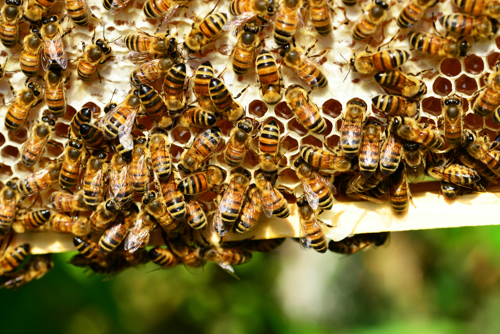

Why Bees Matter

Image by Pexels.
Bees are very important to the environment. Not only do they produce yummy honey, but they are also responsible for pollinating fruits and vegetables. In fact, "In the United States, more than one-third of all crop production—90 crops ranging from nuts to berries to flowering vegetables - requires insect pollination." (Bartuska,2021). Without bees, many of the foods we eat will disappear, which would lead to a food shortage. By saving the bees, we will not only be saving our food but also help the ecosystem thrive and sustain for future food production.